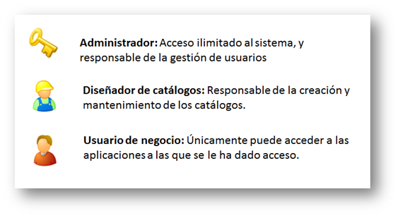
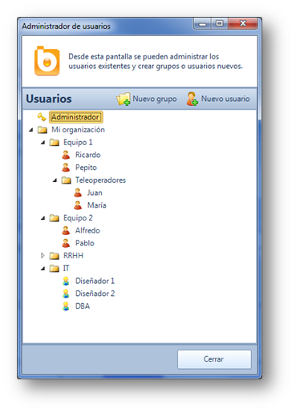
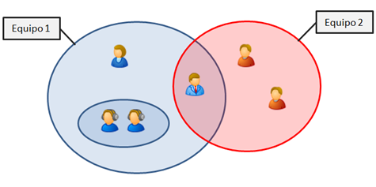
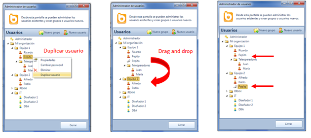
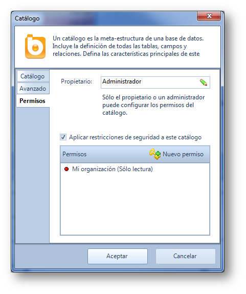
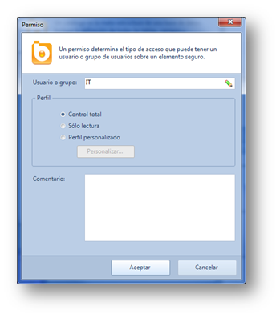
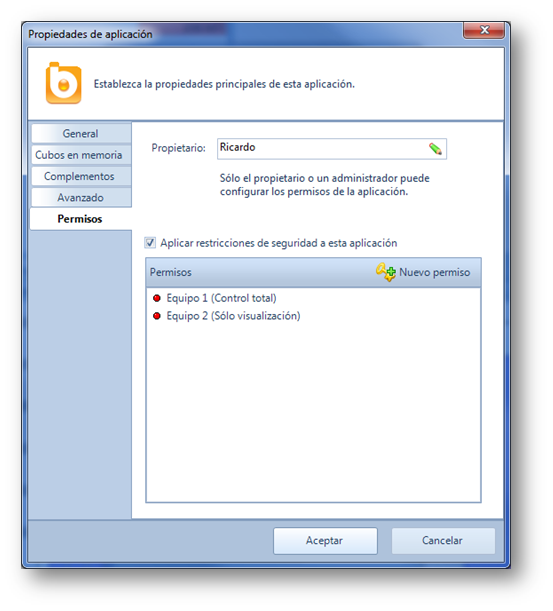

Introducción
La gestión de usuarios de Bingo Intelligence es sencilla y flexible al mismo tiempo.
Básicamente, se deben crear los usuarios dentro de una estructura de carpetas y subcarpetas desde el “Administrador de usuarios”. Una vez creados los usuarios, se deben asignar los permisos sobre cada catálogo y cada aplicación en particular.
Es importante señalar que para ver los informes de una aplicación los usuarios necesitan permisos de acceso a esa aplicación y al catálogo que utiliza.
En este artículo se describe la gestión de usuarios con mayor detalle.
Tipos de usuarios
Se pueden crear tres tipos de usuario con unas características muy diferenciadas:
- Administrador: El usuario podrá trabajar con Bingo Intelligence sin ninguna restricción. Un administrador puede ver y editar cualquier catálogo y aplicación. Los administradores son los responsables de la gestión de usuarios.
- Diseñador. Este perfil permite trabajar con el diseñador de catálogos de Bingo Intelligence. Típicamente, los diseñadores son trabajadores con un perfil técnico que conocen la estructura de la base de datos y son los encargados de la creación del catálogo según los requerimientos de los usuarios. Un diseñador sólo puede trabajar con los catálogos a los que tiene acceso. También puede abrir aplicaciones e informes, aunque solo aquellos a los que tiene acceso. Un diseñador no puede administrar usuarios.
- Usuario de negocio. Este perfil no permite administrar usuarios ni catálogos. Solo puede abrir y modificar aplicaciones e informes, y sólo aquellos a las que tenga acceso.
Bingo Intelligence utiliza un icono distinto para identificar cada tipo de usuario.

Grupos de usuarios
Los usuarios se crean y se organizan en carpetas desde el “Administrador de usuarios” (en el menú “Herramientas”).
La organización en carpetas y subcarpetas de usuarios habitualmente corresponde con la estructura organizativa de la empresa y sirve para agrupar usuarios con perfiles y necesidades análogas. Estas carpetas de usuarios se utilizarán posteriormente para asignar los permisos de acceso a los catálogos y aplicaciones.

Tal como muestra el siguiente diagrama, un mismo usuario puede pertenecer a varios grupos.

Para ello, debe seleccionarse la opción “Duplicar” del menú contextual del usuario, y debe arrastrarse el duplicado a la nueva carpeta. Los usuarios duplicados se representan con un icono específico y son, a todos los efectos, el mismo usuario.

En la tercera imagen se muestra como el usuario “Pepito” pertenece a los grupos “Equipo 1”, “Equipo 2”, y “Mi organización”.
Los permisos, tal como se describe a continuación, se aplican de manera acumulativa. Es decir, cada usuario acumula todos los permisos que estén concedidos explícitamente a él o a cualquiera de los grupos a los que pertenezca.
Permisos de catálogo
De manera predeterminada, el creador de un catálogo se convierte en su propietario. El propietario de un catálogo tiene un acceso completo y sin restricciones al mismo. Desde la ventana de propiedades, el propio propietario o un administrador del sistema pueden configurar los permisos del catálogo.
Para dar acceso al catálogo a otros usuarios o grupos se deben asignar los permisos. Existen 3 tipos de permisos que se pueden asignar:
- Control total: Los usuarios (o grupos) con este permiso podrán conectarse al catálogo y, si son diseñadores, podrán modificarlo.
- Sólo lectura. Los usuarios (o grupos) con este permiso podrán conectarse al catálogo desde una aplicación.
- Perfil personalizado. Aunque no es habitual, se pueden definir otros perfiles intermedios personalizados.
En la siguiente imagen se ha creado un permiso para que cualquier usuario de “Mi organización” pueda conectarse a este catálogo para hacer consultas.

Si se desmarca la opción “Aplicar restricciones de seguridad a este catálogo”, cualquier usuario del sistema podrá utilizar este catálogo (y modificarlo, si es diseñador).
Con el botón “Nuevo permiso” podemos crear un nuevo permiso para que cualquier diseñador de IT pueda modificar el catálogo:

Permisos de aplicación
De manera predeterminada, el creador de una aplicación se convierte en su propietario. El propietario de una aplicación tiene un acceso completo y sin restricciones a la misma. Desde la ventana de propiedades de la aplicación, el propio propietario o un administrador del sistema pueden configurar los permisos de la aplicación.
Para dar acceso a la aplicación a otros usuarios se deben asignar los permisos. Existen 3 tipos de permisos que se pueden asignar:
- Control total: Los usuarios (o grupos) con este permiso podrán abrir la aplicación y modificarla libremente (crear o modificar sus informes, etc.)
- Sólo visualización. Los usuarios (o grupos) con este permiso podrán abrir la aplicación y navegar por sus datos (pero no podrán modificar ningún informe, panel o consulta).
- Personalizado. Aunque no es habitual, se pueden crear otros permisos intermedios personalizados.
En la siguiente imagen se han creados dos permisos para que cualquier usuario del “Equipo 1” pueda abrir la aplicación y modificarla. Además, cualquier usuario del “Equipo 2” podrá abrir los informes y visualizarlos, pero no podrá modificarlos.

Si se desmarca la opción “Aplicar restricciones de seguridad a esta aplicación”, cualquier usuario del sistema podrá abrir y modificar esta aplicación.
Es importante señalar que para ver los informes de una aplicación los usuarios necesitan permisos de acceso a esa aplicación y al catálogo que utiliza.